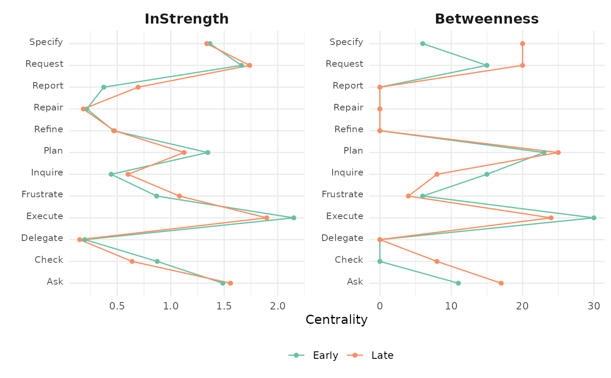

plot_centralities() plots the node centralities of an htna network: the
value of each centrality measure for every code, one panel per measure,
so the codes that hold the central positions of the interaction can be
read at a glance and compared across measures. Colouring the bars by
actor type shows whether the central codes belong to one actor or are
shared between them.
plot_centralities() draws horizontal bars, one per code, in one facet per
measure, sorted by value within each facet by default and labelled with
the value. It accepts an htna network, a grouped network or a table from
centralities_htna(). For a grouped network each panel shows one
line-and-point profile per cohort over the same codes, so differences
between cohorts read along one axis; by is then not used. The chart is
a 'ggplot2' chart and needs that package; it is returned as a ggplot
object.
The values themselves are returned by centralities_htna().
Arguments
- x
An htna network, an
htna_group, or a table fromcentralities_htna().- measures
Measures to plot. Default: all nine.
- by
"state"(default) gives every code its own colour;"group"colours the bars by actor type.- reorder
Sort the codes by value within each measure. Default
TRUE.- ncol
Number of facet columns. Default
3.- scales
Facet scales:
"free_x"(default) or"fixed".- colors
Fill colours, recycled over codes or actor types. Default
NULL(Okabe-Ito for codes, htna_palette for actor types).- labels
Print the value next to each bar. Default
TRUE.- ...
Further arguments for
centralities_htna()whenxis a network.
Conditions
htna_missing_package when 'ggplot2' is not installed; htna_bad_input
when none of measures is in the table or by = "group" is asked for a
table without an actor column.
Examples
if (requireNamespace("ggplot2", quietly = TRUE)) {
data(human_ai)
net <- build_htna(human_ai, actor_type = "actor_type")
plot_centralities(net, measures = c("InStrength", "OutStrength",
"Betweenness"), by = "group")
grp <- build_htna(human_ai, actor_type = "actor_type", group = "phase")
plot_centralities(grp, measures = c("InStrength", "Betweenness"))
}
#> Metadata aggregated per session: ties resolved by first occurrence in 'session_date' (1 sessions), 'cluster' (42 sessions), 'actor_type' (24 sessions)
#> Note: Weights inverted (1/w^1) for path-based measures (invert_weights=TRUE). Higher weights = shorter paths.
#> Metadata aggregated per session: ties resolved by first occurrence in 'cluster' (24 sessions), 'actor_type' (9 sessions)
#> Metadata aggregated per session: ties resolved by first occurrence in 'session_date' (1 sessions), 'cluster' (18 sessions), 'actor_type' (15 sessions)
#> Note: Weights inverted (1/w^1) for path-based measures (invert_weights=TRUE). Higher weights = shorter paths.
#> Note: Weights inverted (1/w^1) for path-based measures (invert_weights=TRUE). Higher weights = shorter paths.
